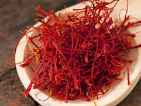
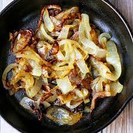
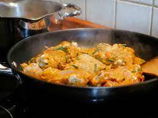

Biryani
Biryani is one of the most amazing royal delicacies introduced to indians
by the Persians. Since then it has been much popular and is considered to be a luxurious
treat to enjoy on special occasions. Making a chicken biryani in authentic dum style does
take some time and needs a little expertise on your side.

There is a reason why chicken biryani is the most ordered dish in India for the last few years!
But why order it when you can make flavourful and delectable restaurant-style Indian chicken biryani
recipe at home? Don't worry if you are new to cooking or don't know how to make such complex dishes.
Cooking Biryani just sounds tough but is one of the easiest chicken dishes. By following the below
given step by step biryani recipe, anyone can whip up a scrumptious dish of Chicken Biryani. One of
the best things about this easy chicken biryani recipe is that it has several layers that give this dish,
different textures, flavours and colours. A plate of chicken Biryani is a perfect balance of good quality
protein and carbs. Chicken Biryani is an ultimate comfort food and is best enjoyed with some salan or raita
on the side. This chicken biryani recipe is prepared using basmati rice, chicken thighs, hung curd, onion,
tomato, milk, saffron and a melange of whole and ground spices. For preparing this amazing and mouth-watering
Biryani recipe, chicken is marinated in yoghurt and a mix of spices and then cooked using the slow-cooking method.
Chicken Biryani is one dish that can be enjoyed on several occasions such as buffet, kitty party, potluck and even
game night. Be it kids or adults, this Chicken Biryani will woo everyone with its succulent flavours and pleasing
aroma. You can make Chicken Biryani at home to treat your loved ones on any occasion. To help you out, here are some
easy steps that will guide you in preparing this amazing dish. Happy Cooking!

Ingredients
- 1 cup boiled basmati rice
- 1/2 teaspoon mint leaves
- Salt as required
- 2 tablespoon refined oil
- 3 green cardamom
- 2 onions
- 1 teaspoon turmeric
- 1 tablespoon garlic paste
- 1 cup hung curd
- 2 tablespoon coriander leaves
- water as required
- 1 tablespoon ghee
- 600 gm chicken
- 1 tablespoon garam masala powder
- 1 teaspoon saffron
- 1 tablespoon bay leaf
- 1 black cardamom
- 1 teaspoon cumin seeds
- 4 green chillies
- 1 tablespoon red chilli powder
- 1 tablespoon ginger paste
- 1/2 tablespoon ginger
- 2 drops kewra
- 1 tablespoon rose water
Method
-
Prepare saffron-kewra water and chop veggies
To make a delightful chicken biryani dish, firstly soak saffron
in water to prepare saffron water (one teaspoon saffron can be soaked in
1/4 cup water). Next, mix kewra drops in water and mix well to make kewra
water. Set them aside for later usage. Now chop the onion and coriander
leaves and keep them aside.

-
Saute the onions
Meanwhile, heat refined oil in a deep bottomed pan. Once the oil is hot enough,
add cumin seeds, bay leaf, green cardamom, black cardamom, cloves in it, and saute
for about a minute. Then, add chopped onion to it and saute until pink. Now, add chicken
into it with slit green chillies, turmeric, salt to taste, ginger garlic paste, red chilli
powder and green chilli paste. Mix well all the spices and cook for 2-3 minutes. Then, add
hung curd into it and give a mix. (Make sure the chicken is washed properly and patted dry
before adding it to the dish)

-
Cook biryani on low heat for 5-6 minutes
Turn the flame to medium again and add garam masala in it along with ginger julienned, coriander
and mint leaves. Add kewra water, rose water and saffron water in it. Cook till the chicken is tender.
Then add 1 cup cooked rice and spread evenly. Then add saffron water and pour ghee over it. You can now
cook the dish without the lid or cover it with a lid to give a dum-effect due to the steam formation.

-
Serve hot chicken biryani with your favourite chutney or raita
Cook for 15-20 minutes with a closed lid and garnish with 1 tbsp fried onions and coriander leaves.
Serve hot chicken biryani with raita of your choice. Enjoy!
This is your recipe for the perfect biryani. Good luck and Happy cooking!